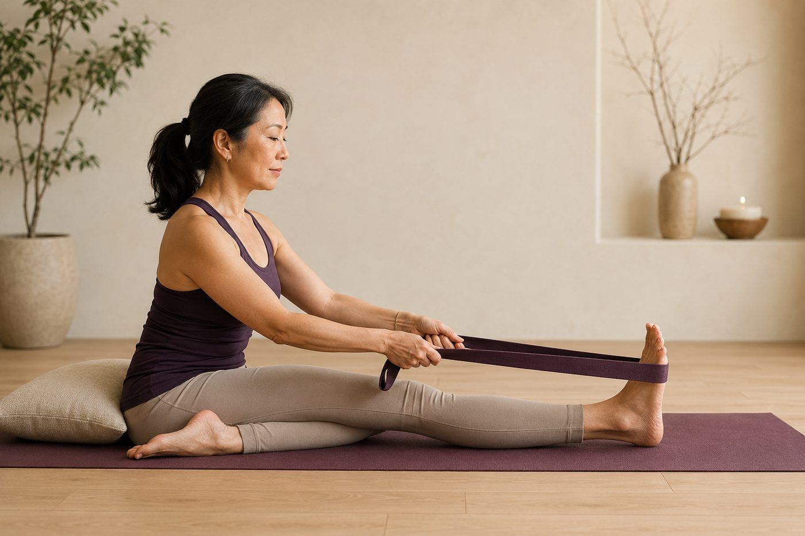

腿後總是很緊，一直拉之前可以先留意什麼？
你每天都在拉腿後，今天換洗床單時才彎腰一下，熟悉的拉扯感又回來了。這次先別急著把手往腳尖伸，再彎一次時留意感受從哪裡開始。
腿後的膕旁肌跨過髖與膝，屈髖、膝蓋伸直或稍彎，都可能改變大腿後側的牽拉感。先把原動作做小一次，對照微彎膝或有支撐時感受是否改變。緊繃感無法單獨判定肌肉長短或核心穩定度。若出現疼痛、麻刺或無力，先停止，反覆出現或持續時尋求評估。

同一片腿後，為什麼換姿勢感覺就不同？
站姿前彎時要承重，仰躺時有地面支撐，髖膝角度也可能不同。可以比較感受位置和動作幅度。手離地多遠也會受其他部位和動作方式影響，想了解距離的問題，可看前彎摸不到腳尖。
👆 手機版可左右滑動
| 練習反應 | 可做的調整 | 觀察重點 |
|---|---|---|
| 大腿後側有溫和牽拉感 | 停在舒服的範圍。 | 牽拉位置與程度。 |
| 微彎膝或減小幅度後感受改變 | 用同一動作的小範圍試一次。 | 哪個改動讓感受比較舒服。 |
| 出現尖銳痛、麻刺或無力 | 先停止這個動作。 | 反覆或持續出現時尋求評估。 |
伸展有牽拉感時，怎麼調整幅度？
可以先減少向前的幅度，讓膝蓋微彎，或找穩固支撐。調整後留意感受變淡、變強，還是移到另一處。若想練習髖與軀幹怎麼配合，可以看前彎時怎麼摺髖。調整後若仍疼痛或麻刺，就先停下。
常見問題
腿後緊就一定是肌肉太短嗎？
單憑緊繃感無法判定肌肉長短。先看感受是否隨動作、幅度或支撐改變。
拉完舒服一下，隔天緊回來代表核心不穩嗎？
不能從這個變化判定核心不穩。可以記下做了什麼，以及隔天在哪些情境又感到緊。
記下你最有感的時刻
先記下哪個動作、做到哪一段開始有感，以及減小幅度後的差別。
免費約 2 分鐘，免登入、免加 LINE。做完可用 3 天觀察卡整理日常感受。
開始免費體態訊號掃描 →